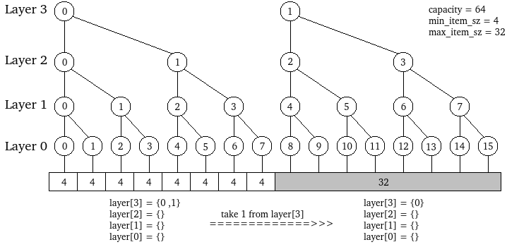
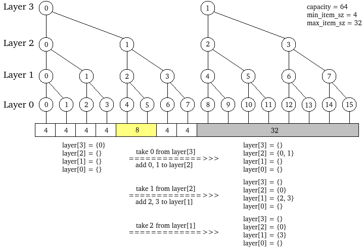
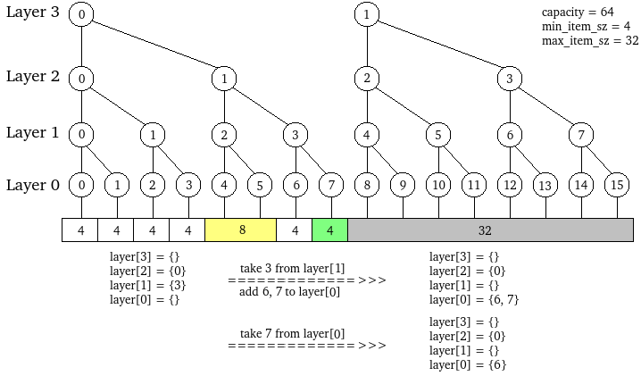
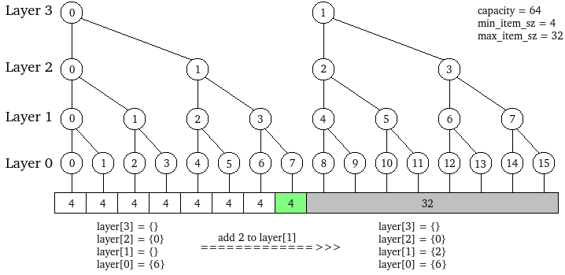
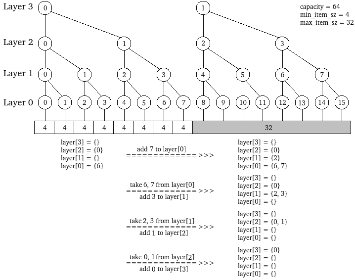

最近需要给NVM开发一个内存分配器，需要支持：
int malloc_at(void* addr, size_t size);
这么一个函数。也就是说，有别于一般的为DRAM设计的内存分配器，该分配器不仅要能够指定分配的大小，还要能指定分配的位置。当然，一般分配器的标准API也一样需要实现。
要么改现有的分配器的代码，要么自己实现一个。前者太复杂了，比如jemalloc，它的代码好复杂。。。所以只好自己实现。中间踩过的坑就不说了，我最终的方案是模仿Linux内核中的buddy + slab的模式。Buddy作为粗粒度的分配器，slab作为细粒度的分配器。今天先说buddy allocator吧。
buddy allocator可以使用下图描绘：

这是用buddy管理一个64字节连续空间的情形。这64字节被划分成16个4字节，也就是说4字节是分配的最小单位。第2n个和第2n+1个4字节单位可以合并构成一个8字节单位，以此类推。从下往上层号从0递增。最高层不一定非得归结到一个节点，也可以是多个（而且可以是任意正整数）。比如图中，最大分配单位是32字节，所以有2个根节点。所以说，buddy内部其实是一片森林。
要分配某个大小的空间，就可以在对应的层中寻找空闲的节点。如果某个节点被分配掉了，那么其更高层的直系节点就不能再分配。比如第2个4字节被分配了，那么第1个8字节、第0个16字节和第0个32字节都不能分配了。
上述的是逻辑上的规则。接下来我说一下我的代码中的算法。依旧以上图的情形为例。总共四层，那么我把每一层看作一个集合，则有layer[0]~layer[3]。layer[i]表示第i层有哪些节点可用。刚开始，layer[0]~layer[2]都是空集，layer[3]里面我放入两个元素{0, 1}。此时，比如我要分配一个32字节的块，那么就在layer[3]中任意取出一个元素，比如我取到了1，那么就返回1 * 32 = 32给用户，表示地址为32的地方开始的一块32字节的空间给你用：

此时，如果用户申请一块8字节的空间，那么我就试图从layer[1]中取出一个元素。然而，layer[1]是空集。那么就向上一层，也就是layer[2]申请，结果layer[2]也是空集。再接下来，就向layer[3]申请，取出了元素0。那么就把layer[3]中的0“分裂”成layer[2]中的两块，即0和1，加入layer[2]中。接着，从layer[2]中取出一个任意元素，比如取到1，那么就把2和3加入到layer[1]中。再接着，从layer[1]中任意取出一个元素，比如2，把2 * 8 = 16返回给用户，表示地址为16的地方开始的一块8字节空间给你用。整个过程如图：

可以看到，整个过程是一个递归的过程。假设现在又要申请一个4字节的块，那么先查看layer[0]，发现是空集，就向layer[1]申请。从layer[1]中取出3，“分裂”成6和7，放入layer[0]中。然后再从layer[0]中任意取出一个元素，比如7，返回7 * 4 = 28给用户。

上述就是malloc()的过程。那么free()就是反过来。不过这里的free()和标准的C库的free()不同，需要传入size参数，即：
int buddy_free(void* addr, size_t size);
接着上面的例子。假设此时要释放倒数第二次申请的(addr = 16, size = 8)这一块空间。既然size=8，那么就得知对应的层是layer[1]，并且是第16 / 8 = 2块。所以把2放入layer[1]中。过程如下：

再接着，释放最后一次申请的(addr = 28, size = 4)。既然size = 4，那么对于的层就是layer[0]，并且是第28 / 4 = 7块。按常理，要把7放入layer[0]中。不过，在放入之前，发现其伙伴6也在layer[0]中，于是就把6取出，“合并”为3，试图放入layer[1]。不过，在把3放入layer[1]之前，又发现3的伙伴2也在layer[1]中，于是就把2取出，“合并”为1，试图放入layer[2]中。结果，在把1放入layer[2]之前，又发现1的伙伴0也在layer[2]中，于是取出0，“合并”为0，试图放入layer[3]中。这次没法合并了，就把0放入layer[3]，结束。过程如下：

至于malloc_at()操作，其实只要在malloc()的递归过程中带上一个参数，表示某一层中的块号即可（具体看代码）。可以看到，分配和释放过程都涉及到集合的增删查操作。为了让这三个操作都有不错的性能，自然而然想到了AVL树。所以每一个layer[i]就用一棵AVL树来实现。AVL树的实现是直接用了《C语言实现通用版AVL树》中的代码。不过因为引用的头文件增加了一个common.h，所以我这里重新贴一下。
common.h
#ifndef COMMON_H
#define COMMON_H
#include <stdio.h>
#define ERROR(ret, show_errstr, msgs...) \
do \
{ \
fprintf(stderr, "[<%s> @ %s: %d]: ", __FUNCTION__, __FILE__, __LINE__); \
fprintf(stderr, ##msgs); \
if(show_errstr) \
perror(0); \
else \
printf("\n"); \
return (ret); \
} \
while(0)
#ifndef assert
#include <assert.h>
#endif
#endif
avl.h
#ifndef AVL_H
#define AVL_H
#include <stdlib.h>
// AVL树节点
struct avl_node
{
void* val;
ssize_t height;
struct avl_node* left;
struct avl_node* right;
};
// 向AVL树插入一个值，使用指定函数进行值与值之间的比较
// root: AVL树根节点
// val: 待插入的值
// comparator: 自定义比较函数：如果v1<v2，返回-1；如果v1=v2，返回0；如果v1>v2，返回1。
// 返回：新的AVL树根节点
struct avl_node* avl_insert(struct avl_node* root, void* val,
int (*comparator)(const void* v1, const void* v2));
// 从AVL树中删除一个值，使用指定函数进行值与值之间的比较
// root: AVL树根节点
// val: 待删除的值
// comparator: 自定义比较函数：如果v1<v2，返回-1；如果v1=v2，返回0；如果v1>v2，返回1。
// found: 如果找到，则置为1（应事先置为0）
// 返回：新的AVL树根节点
struct avl_node* avl_delete(struct avl_node* root, void* val,
int (*comparator)(const void* v1, const void* v2), int* found);
// get 在AVL树中搜索指定值，使用指定函数进行值与值之间的比较
// root: AVL树根节点
// val: 待插入的值
// comparator: 自定义比较函数：如果v1<v2，返回-1；如果v1=v2，返回0；如果v1>v2，返回1。
// 返回：如果站到该值，则返回包含该值的树节点，否则返回0
struct avl_node* avl_search(struct avl_node* root, void* val,
int (*comparator)(const void* v1, const void* v2));
// 获取指定AVL树中节点总数
// root: AVL树根节点
size_t avl_node_count(struct avl_node* root);
#endif
avl.c
#include <avl.h>
#include <common.h>
#define get_height(node) (((node)==0)?(-1):((node)->height))
#define max(a,b) ((a)>(b)?(a):(b))
/* RR(Y rotates to the right):
k2 k1
/ \ / \
k1 Z ====== X k2
/ \ / \
X Y Y Z
*/
/*
Return which the root pointer(at a higher level) should point to
*/
static struct avl_node* rr_rotate(struct avl_node* k2)
{
assert(k2 != 0);
struct avl_node* k1 = k2 -> left;
k2 -> left = k1 -> right;
k1 -> right = k2;
k2 -> height = max(get_height(k2 -> left), get_height(k2 -> right)) + 1;
k1 -> height = max(get_height(k1 -> left), k2 -> height) + 1;
return k1;
}
/* LL(Y rotates to the left):
k2 k1
/ \ / \
X k1 ====== k2 Z
/ \ / \
Y Z X Y
*/
static struct avl_node* ll_rotate(struct avl_node* k2)
{
assert(k2 != 0);
struct avl_node* k1 = k2 -> right;
k2 -> right = k1 -> left;
k1 -> left = k2;
k2 -> height = max(get_height(k2 -> left), get_height(k2 -> right)) +1;
k1 -> height = max(get_height(k1 -> right), k2 -> height) +1;
return k1;
}
/* LR(B rotates to the left, then C rotates to the right):
k3 k3 k2
/ \ / \ / \
k1 D k2 D k1 k3
/ \ ====== / \ ====== / \ / \
A k2 k1 C A B C D
/ \ / \
B C A B
*/
/*
Return which the root pointer should point to
*/
static struct avl_node* lr_rotate(struct avl_node* k3)
{
assert(k3 != 0);
k3 -> left = ll_rotate(k3 -> left);
return rr_rotate(k3);
}
/* RL(D rotates to the right, then C rotates to the left):
k3 k3 k2
/ \ / \ / \
A k1 A k2 k3 k1
/ \ ====== / \ ====== / \ / \
k2 B C k1 A C D B
/ \ / \
C D D B
*/
static struct avl_node* rl_rotate(struct avl_node* k3)
{
assert(k3 != 0);
k3 -> right = rr_rotate(k3 -> right);
return ll_rotate(k3);
}
/* return which the root pointer(at an outer/higher level) should point to,
the root_node of AVL tree may change frequently during delete/insert,
so the Root pointer should point to the REAL root node.
*/
struct avl_node* avl_insert(struct avl_node* root, void* val,
int (*comparator)(const void* v1, const void* v2))
{
assert(comparator != 0);
if(root == 0)
{
root = malloc(sizeof(struct avl_node));
root -> val = val;
root -> left = 0;
root -> right = 0;
root -> height = 0;
return root;
}
if(comparator(val , root -> val) < 0)
root -> left = avl_insert(root -> left, val, comparator);
else
root -> right = avl_insert(root -> right, val, comparator);
root -> height = max(get_height(root -> left), get_height(root -> right)) + 1;
ssize_t height_delta= get_height(root -> left) - get_height(root -> right);
if(height_delta == 2)
{
if(comparator(val, root -> left -> val) < 0)
root = rr_rotate(root);
else
root = lr_rotate(root);
}
else if(height_delta == -2)
{
if(comparator(val, root -> right -> val) < 0)
root = rl_rotate(root);
else
root = ll_rotate(root);
}
return root;
}
/* return which the root pointer(at an outer/higher level) should pointer to,
cause the root_node of AVL tree may change frequently during delete/insert,
so the Root pointer should point to the REAL root node.
*/
struct avl_node* avl_delete(struct avl_node* root, void* val,
int (*comparator)(const void* v1, const void* v2), int* found)
{
assert(comparator != 0);
if(root == 0)
return 0;
int comp = comparator(val, root -> val);
if(comp == 0)
{
if(root -> right == 0)
{
struct avl_node* temp = root;
root = root -> left;
free(temp);
if(found != 0)
(*found) = 1;
return root;
}
else
{
struct avl_node* temp = root -> right;
while(temp -> left)
temp = temp -> left;
root -> val = temp -> val;
root -> right = avl_delete(root -> right, temp -> val, comparator, found);
}
}
else if(comp < 0)
root -> left = avl_delete(root -> left, val, comparator, found);
else
root -> right = avl_delete(root -> right, val, comparator, found);
root -> height = max(get_height(root -> left), get_height(root -> right)) + 1;
ssize_t height_delta = get_height(root -> left) - get_height(root -> right);
if(height_delta == 2)
{
if(get_height(root -> left -> left) >= get_height(root -> left -> right))
root = rr_rotate(root);
else
root = lr_rotate(root);
}
else if(height_delta == -2)
{
if(get_height(root -> right -> right) >= get_height(root -> right -> left))
root = ll_rotate(root);
else
root = rl_rotate(root);
}
return root;
}
// get the node that contains the value that equals to the given one
struct avl_node* avl_search(struct avl_node* root, void* val,
int (*comparator)(const void* v1, const void* v2))
{
assert(comparator != 0);
if(root == 0)
return 0;
int comp = comparator(val, root -> val);
if(comp == 0)
return root;
else if(comp < 0)
return avl_search(root -> left, val, comparator);
else
return avl_search(root -> right, val, comparator);
}
// get how many nodes in the tree
size_t avl_node_count(struct avl_node* root)
{
if(root == 0)
return 0;
return 1 + avl_node_count(root -> left) + avl_node_count(root -> right);
}
这些都是铺垫，接下来才是重头戏！然而重头戏却很简短~
buddy.h
#ifndef BUDDY_H
#define BUDDY_H
#include <avl.h>
#include <stdlib.h>
// 一个伙伴分配器实例
struct buddy
{
// 根节点数量
size_t root_count;
// 层数
size_t layer_count;
// 各个层
struct avl_node** layers;
// 最底层的单元大小
size_t min_item_sz;
};
// 分配失败时的返回值
#define BUDDY_ALLOCATE_FAILED ((size_t)(-1))
// 初始化一个buddy实例，
// buddy: 一个buddy的指针
// capacity: 要管理的空间的大小
// min_item_sz: 最小的分配单元的大小
// max_item_sz: 最大的分配单元的大小
// 成功返回1，失败返回0。
int buddy_init(struct buddy* buddy, size_t capacity, size_t min_item_sz, size_t max_item_sz);
// 销毁一个buddy实例，即释放该buddy占用的动态内存，但不负责buddy本身的释放
// buddy: 一个buddy的指针
// 成功返回1，失败返回0。
int buddy_deinit(struct buddy* buddy);
// 从buddy中分配一个单元
// buddy: 一个buddy的指针
// size: 单元大小
// 成功返回单元在空间中的偏移量，失败返回BUDDY_ALLOCATE_FAILED。
size_t buddy_allocate(struct buddy* buddy, size_t size);
// 从buddy中分配一个单元
// buddy: 一个buddy的指针
// addr: 单元的起始位置，用单元在空间中的偏移量表示
// size: 单元大小
// 成功返回addr，失败返回BUDDY_ALLOCATE_FAILED。
size_t buddy_allocate_at(struct buddy* buddy, size_t addr, size_t size);
// 释放一个单元回buddy中
// buddy: 一个buddy的指针
// addr: 单元的起始位置，用单元在空间中的偏移量表示
// size: 单元大小
// 成功返回1，失败返回0。
int buddy_free(struct buddy* buddy, size_t addr, size_t size);
#endif
buddy.c
#include <buddy.h>
#include <common.h>
#include <string.h>
// 计算n是2的几次方。如果n不是2的自然数幂，那么返回(size_t)(-1)
static size_t to_power(size_t n)
{
size_t power;
for(power = 0; n >> (power + 1); power++);
if((1 << power) != n)
return (size_t)(-1);
return power;
}
// 比较两个void*的大小
static int plain_comparator(const void* v1, const void* v2)
{
if(v1 < v2)
return -1;
if(v1 == v2)
return 0;
return 1;
}
int buddy_init(struct buddy* buddy, size_t capacity, size_t min_item_sz, size_t max_item_sz)
{
assert(buddy);
size_t power = to_power(max_item_sz / min_item_sz);
if(power == (size_t)(-1) || (1 << power) * min_item_sz != max_item_sz)
ERROR(0, 0, "param <max_item_sz = %lu> / param <min_item_sz = %lu> is not a power of 2!", max_item_sz, min_item_sz);
buddy->layer_count = power + 1;
buddy->root_count = capacity / max_item_sz;
if(buddy->root_count == 0)
ERROR(0, 0, "param <capacity = %lu> is not big enough!", capacity);
buddy->min_item_sz = min_item_sz;
size_t array_sz = sizeof(struct avl_node*) * buddy->layer_count;
buddy->layers = malloc(array_sz);
if(!buddy->layers)
ERROR(0, 1, "malloc(%lu) failed, ", array_sz);
memset(buddy->layers, 0, array_sz);
struct avl_node** top_layer = buddy->layers + (buddy->layer_count - 1);
for(size_t i = 0; i < buddy->root_count; i++)
(*top_layer) = avl_insert((*top_layer), (void*)i, plain_comparator);
return 1;
}
int buddy_deinit(struct buddy* buddy)
{
assert(buddy);
for(size_t i = 0; i < buddy->layer_count; i++)
{
struct avl_node* layer = buddy->layers[i];
while(layer)
{
int found = 0;
layer = avl_delete(layer, (void*)layer->val, plain_comparator, &found);
assert(found);
}
}
free(buddy->layers);
return 1;
}
#define SIZE_TO_LAYER_INDEX(buddy, size, layer_index, fail_ret) \
do \
{ \
size_t power = to_power((size) / (buddy)->min_item_sz); \
if(power == (size_t)(-1) || (1 << power) * (buddy)->min_item_sz != (size)) \
ERROR((fail_ret), 0, "param <%s = %lu> / <(%s)->min_item_sz = %lu> is not a power of 2!", #size, (size), #buddy, (buddy)->min_item_sz); \
(layer_index) = power; \
if((layer_index) >= (buddy)->layer_count) \
ERROR((fail_ret), 0, "param <%s = %lu> is too big!", #size, size); \
} \
while(0)
// 从指定层取出一个节点。若没有，则向上层申请分裂，从上层分裂出来的两个节点中，一个会被加入当前层，一个会被返回
// layer_index: 当前层号
// 返回一个整数，表示从上层的一个节点分裂出来的两个该层节点中，取出来的那个节点编号
// 失败返回(size_t)(-1)
static size_t get_a_item_from_layer(struct buddy* buddy, size_t layer_index)
{
if(layer_index >= buddy->layer_count)
return (size_t)(-1);
struct avl_node** layer = buddy->layers + layer_index;
if((*layer))
{
size_t item_index = (size_t)(*layer)->val;
int found = 0;
(*layer) = avl_delete((*layer), (void*)item_index, plain_comparator, &found);
assert(found);
return item_index;
}
size_t upper_item_index = get_a_item_from_layer(buddy, layer_index + 1);
if(upper_item_index == (size_t)(-1))
return (size_t)(-1);
(*layer) = avl_insert((*layer), (void*)(upper_item_index * 2 + 1), plain_comparator);
return upper_item_index * 2;
}
size_t buddy_allocate(struct buddy* buddy, size_t size)
{
assert(buddy);
size_t layer_index;
SIZE_TO_LAYER_INDEX(buddy, size, layer_index, BUDDY_ALLOCATE_FAILED);
size_t item_index = get_a_item_from_layer(buddy, layer_index);
if(item_index == (size_t)(-1))
ERROR(BUDDY_ALLOCATE_FAILED, 0, "no more space available for size = %lu!", size);
return item_index * size;
}
#define ADDR_AND_SIZE_TO_ITEM_INDEX(addr, size, item_size, fail_ret) \
do \
{ \
(item_index) = (addr) / (size); \
if((item_index) * (size) != (addr)) \
ERROR((fail_ret), 0, "param <%s = %lu> is not aligned by param <%s = %lu>!", #addr, (addr), #size, (size)); \
} \
while(0)
#define BUDDY_INDEX(item_index) ((item_index) % 2 ? (item_index) - 1 : (item_index) + 1)
// 从指定层取出指定节点，若无则向上层申请分裂，上层分裂得到当前层指定节点和其伙伴，把伙伴放入该层
// layer_index: 当前层号
// item_index: 想要的节点编号
// 成功返回1，失败返回0
static int get_the_item_from_layer(struct buddy* buddy, size_t layer_index, size_t item_index)
{
if(layer_index >= buddy->layer_count)
return 0;
struct avl_node** layer = buddy->layers + layer_index;
int found = 0;
(*layer) = avl_delete((*layer), (void*)item_index, plain_comparator, &found);
if(found)
return 1;
if(!get_the_item_from_layer(buddy, layer_index + 1, item_index / 2))
return 0;
(*layer) = avl_insert((*layer), (void*)BUDDY_INDEX(item_index), plain_comparator);
return 1;
}
size_t buddy_allocate_at(struct buddy* buddy, size_t addr, size_t size)
{
assert(buddy);
size_t layer_index, item_index;
SIZE_TO_LAYER_INDEX(buddy, size, layer_index, BUDDY_ALLOCATE_FAILED);
ADDR_AND_SIZE_TO_ITEM_INDEX(addr, size, item_index, BUDDY_ALLOCATE_FAILED);
if(!get_the_item_from_layer(buddy, layer_index, item_index))
ERROR(BUDDY_ALLOCATE_FAILED, 0, "the given item (addr = %lu, size = %lu) is not available!", addr, size);
return addr;
}
// 在某层释放指定元素
static void free_to_layer(struct buddy* buddy, size_t layer_index, size_t item_index)
{
assert(layer_index < buddy->layer_count);
struct avl_node** layer = buddy->layers + layer_index;
assert(!avl_search((*layer), (void*)item_index, plain_comparator));
if(layer_index < buddy->layer_count - 1)
{
int found = 0;
(*layer) = avl_delete((*layer), (void*)BUDDY_INDEX(item_index), plain_comparator, &found);
if(found)
{
free_to_layer(buddy, layer_index + 1, item_index / 2);
return;
}
}
(*layer) = avl_insert((*layer), (void*)item_index, plain_comparator);
}
int buddy_free(struct buddy* buddy, size_t addr, size_t size)
{
assert(buddy);
size_t layer_index, item_index;
SIZE_TO_LAYER_INDEX(buddy, size, layer_index, 0);
ADDR_AND_SIZE_TO_ITEM_INDEX(addr, size, item_index, 0);
free_to_layer(buddy, layer_index, item_index);
return 1;
}
把这五个文件放在一起，再写个test_buddy.c：
#include <buddy.h>
#include <stdio.h>
#include <assert.h>
int main()
{
struct buddy b;
int ret;
ret = buddy_init(&b, (size_t)1<<40, 1<<20, 512<<20);
assert(ret);
size_t addr;
for(size_t i = 0; i < (1<<20); i ++)
{
addr = buddy_allocate_at(&b, (1<<20) * i , 1<<20);
assert(addr != BUDDY_ALLOCATE_FAILED);
//printf("addr = %lu\n", addr);
//ret = buddy_free(&b, addr, 4);
//assert(ret);
}
for(size_t i = 0; i < (1<<20); i ++)
{
ret = buddy_free(&b, (1<<20) * i, 1<<20);
assert(ret);
}
for(size_t i = 0; i < (1<<20); i ++)
{
addr = buddy_allocate(&b, 1<<20);
assert(addr != BUDDY_ALLOCATE_FAILED);
//printf("addr = %lu\n", addr);
//ret = buddy_free(&b, addr, 4);
//assert(ret);
}
for(size_t i = 0; i < (1<<20); i ++)
{
ret = buddy_free(&b, (1<<20) * i, 1<<20);
assert(ret);
}
return 0;
}
也就是让buddy管理1TB的空间，最小单元是1M，最大单元是512M。然后先通过malloc_at()分配1M个1M大小的单元，恰好耗尽所有空间，再全部释放，再用malloc()耗尽所有空间，再全部释放。
gcc -std=gnu99 -O3 *.c -o test_buddy -I. time ./test_buddy
在我Intel(R) Core(TM) i5-2450M CPU @ 2.50GHz的笔记本上，用时0.374s，也就是一次malloc() + malloc() + 2 * free()的组合操作，平均用时357纳秒。当然，我也做了单独的测试，如下：
| malloc_at | 146ns |
| malloc | 125ns |
| free | 89ns |
关闭assert，在Intel(R) Xeon(R) Platinum 8180M CPU @ 2.50GHz的服务器上，用时0.276s。单独测试结果如下：
| malloc_at | 81ns |
| malloc | 67ns |
| free | 61ns |